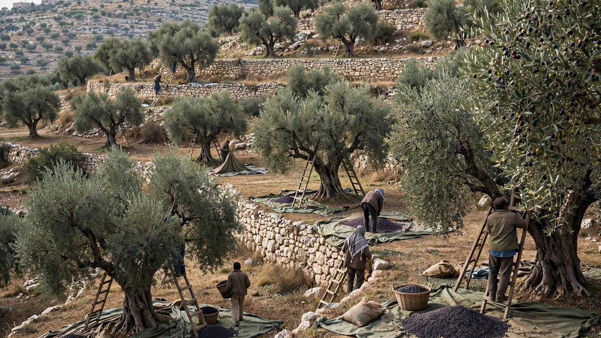

Fotógrafa del Washington Post, golpeada en un ataque de colonos contra la cosecha de aceitunas en Cisjordania
Colonos enmascarados quemaron olivos y lanzaron piedras contra aldeanos que recogían la cosecha cerca de Abu Falah el viernes. La fotoperiodista Heidi Levine fue pateada en el suelo, trasladada a un hospital, y su diario ha exigido una investigación.

Puntos clave
- Actualizado 13:32 UTC, 18 de octubre: El embajador de Estados Unidos en Israel, Mike Huckabee, condenó el ataque a última hora del sábado en una publicación en X, y lo calificó de acto de terror…
- Actualizado 13:12 UTC, 17 de octubre: Miembros del Congreso de Estados Unidos condenaron el ataque el sábado, informaron The Washington Post y The Jerusalem Post.
- Actualizado 03:23 UTC, 17 de octubre: Un equipo de la BBC que presenció uno de varios ataques cerca de Abu Falah el viernes dijo que un funcionario local cifró en 12 el número de palestinos…
Actualizado 13:32 UTC, 18 de octubre: El embajador de Estados Unidos en Israel, Mike Huckabee, condenó el ataque a última hora del sábado en una publicación en X, y lo calificó de acto de terror despreciable cometido por cobardes enmascarados y de acto deshonroso de violencia sin sentido, informaron CNN y Associated Press. Dijo que Levine es ciudadana estadounidense y estaba claramente identificada como periodista, que quienes atacaron a una reportera desarmada deberían pasar años en prisión, y que Washington había pedido una investigación completa, detenciones y un proceso judicial con todo el peso de la ley. El secretario de Estado, Marco Rubio, dijo a los periodistas el sábado que el gobierno estaba muy perturbado por las imágenes, que Washington había pedido a Israel y seguiría pidiéndole que actuara con firmeza contra los ataques de colonos, y que el Departamento de Estado se había puesto en contacto con The Washington Post para ofrecer ayuda consular y había pedido a la embajada en Jerusalén un informe para el domingo, informaron CNN y Reuters. Rubio dijo que levantar las sanciones contra los colonos no significaba que el presidente Donald Trump apoyara la violencia. El presidente israelí, Isaac Herzog, dijo que llamó a Levine el sábado, después de que terminó el sabbat, condenó con firmeza la violencia y se disculpó por lo que ella había pasado. Levine sigue en un hospital de Tel Aviv mientras se recupera de una operación en la mano, costillas rotas y otras lesiones, informó Associated Press. Yesh Din dice que alrededor del 94 por ciento de las investigaciones sobre violencia de colonos desde 2005 han terminado sin acusación formal, y solo el 3 por ciento ha llevado a condenas completas o parciales, informó Associated Press.
Actualizado 13:12 UTC, 17 de octubre: Miembros del Congreso de Estados Unidos condenaron el ataque el sábado, informaron The Washington Post y The Jerusalem Post. El representante Jamie Raskin, de Maryland, calificó la agresión reportada contra Levine de inaceptable y de un momento decisivo para el mundo, y preguntó si el mundo toleraría la violencia de vigilantes contra civiles palestinos y observadores extranjeros por parte de vigilantes de derecha que actúan con protección del gobierno. El senador Andy Kim, de Nueva Jersey, dijo que los informes de que el ataque fue coordinado y de que los soldados israelíes no intervinieron eran preocupantes, y dijo que seguiría pidiendo una investigación y rendición de cuentas. El representante Ro Khanna, de California, pidió que Estados Unidos corte la ayuda que se usa para financiar la actividad de los colonos y detenga la venta de esas armas. La senadora Tammy Duckworth, de Illinois, dijo que las autoridades israelíes deben hacer rendir cuentas a los responsables del ataque y dejar de facilitar los esfuerzos más amplios para anexionarse Cisjordania.
Actualizado 03:23 UTC, 17 de octubre: Un equipo de la BBC que presenció uno de varios ataques cerca de Abu Falah el viernes dijo que un funcionario local cifró en 12 el número de palestinos heridos en las agresiones, entre ellos cuatro ciudadanos con doble nacionalidad palestina y estadounidense, informó la BBC. Esa cifra cubre el conjunto más amplio de ataques de ese día y supera los seis heridos en Abu Falah reportados por la Media Luna Roja Palestina. Un miembro del consejo de Turmus Ayya dijo a la BBC que el ciudadano estadounidense Majdi Fheed necesitó tratamiento por heridas profundas en la cabeza y el cuello tras un ataque con palos con clavos, y que su madre anciana también resultó herida.
Actualizado 02:53 UTC, 17 de octubre: The Washington Post informó que Levine sufrió cortes en todo el cuerpo, una costilla rota y un dedo desgarrado que necesita cirugía, informó Reuters. El periodista Jasper Nathaniel, que vio el ataque y ayudó a Levine, dijo a CNN que también tenía una vértebra rota y una lesión grave en un dedo, que los colonos la golpearon con palos, la levantaron por el chaleco y volvieron a patearla hasta tirarla, y que jóvenes palestinos lo ayudaron a llegar hasta ella. Gadi Eisenkot, el principal rival electoral del primer ministro Benjamin Netanyahu, calificó el ataque de inaceptable y dijo que estos actos manchan a toda la nación, informó CNN.
Actualizado 01:02 UTC, 17 de octubre: La Sociedad de la Media Luna Roja Palestina dijo que seis personas resultaron heridas en Abu Falah, y que una mujer de 63 años y un hombre de 40 fueron llevados a un hospital tras ser golpeados, informó Associated Press. La cifra supera el recuento inicial de al menos dos heridos en el olivar. La oficina del primer ministro Benjamin Netanyahu dijo el viernes por la noche que los hechos de la confrontación seguían sin estar claros y bajo investigación, condenó la violencia contra cualquier persona y dijo que los responsables rendirían cuentas, informó CNN. El editor ejecutivo del Washington Post, Matt Murray, respondió que algunos hechos no estaban en disputa, dijo que Levine estaba claramente marcada como prensa y que fue claramente golpeada, y volvió a pedir una investigación completa y rendición de cuentas.
Actualizado 19:42 UTC: La Embajada de Estados Unidos en Jerusalén dijo que estaba al tanto del ataque y seguía la situación. Condenó la violencia criminal de cualquier parte en Cisjordania y pidió investigaciones, detenciones y condenas de los responsables, informó NPR. El Comité para la Protección de los Periodistas dijo que Levine le contó desde su cama de hospital que se había identificado ante los atacantes como periodista estadounidense, que esperaba necesitar puntos en la mano y en la espalda, y que le quitaron la bolsa, la cámara y el teléfono durante el ataque. El comité dijo que la paliza siguió a una serie de ataques contra periodistas que cubren la cosecha, entre ellos la paliza del 6 de octubre al fotógrafo de AFP Jaafar Ashtiyeh.
Actualizado 15:28 UTC: La Policía de Israel dijo que abrió una investigación tras recibir informes del ataque y que trata la violencia con seriedad, en particular cuando afecta a periodistas en su trabajo, informó CNN. Las Fuerzas de Defensa de Israel dijeron que examinarán todas las circunstancias del incidente y calificaron de graves e inaceptables los ataques contra civiles inocentes. La Asociación de Prensa Extranjera condenó el ataque, dijo que Levine estaba estable en el Hospital Gubernamental de Ramala, con vendajes en la mano y la pierna, y pidió al Comando Central del ejército israelí que proteja a los civiles de las turbas violentas.
Unos 80 colonos enmascarados atacaron el viernes a palestinos que recogían aceitunas cerca de la aldea de Abu Falah, en la Cisjordania ocupada, quemaron árboles e hirieron al menos a dos personas, informó Reuters. Una de las heridas fue Heidi Levine, fotoperiodista en misión para The Washington Post.
Testigos de Reuters dijeron que los colonos, vestidos de negro y algunos con bombonas de gas, bajaron de una colina sobre un olivar en terrazas donde los aldeanos se habían reunido para la cosecha anual, al noreste de Ramala. Algunos usaron hondas para lanzar piedras contra los aldeanos. Los aldeanos bajaron por la colina y algunos devolvieron piedras. El agricultor Moutaz Abdelhadi, de 42 años, dijo a Reuters que los colonos quieren expulsar a las familias locales de sus hogares.
El ataque contra Levine
Un video del lugar mostró a Levine de lado en un camino de tierra, cubriéndose la cara con las manos, mientras al menos tres colonos estaban sobre ella. CNN informó que Levine dijo que el grupo con el que estaba retrocedió cuando los colonos corrieron hacia ellos, y que los atacantes la patearon mientras estaba en el suelo. Dijo que le arrancaron la bolsa de la cámara, el teléfono y las cámaras, y que el ataque duró unos 10 minutos.
Levine llevaba un chaleco con la marca PRESS y equipo de protección. Después dijo que su casco y su chaleco antibalas probablemente la salvaron de lesiones peores. Colegas palestinos la ayudaron a salir, los médicos la llevaron primero a una clínica en Abu Falah y luego a un hospital en Ramala, y los informes del hospital dijeron que estaba estable, con vendajes en la mano izquierda. Los médicos palestinos dijeron que una segunda persona herida también fue trasladada a un hospital de la zona de Ramala.
Responde el diario y llega el ejército
El editor ejecutivo del Washington Post, Matt Murray, dijo que Levine llevaba marcas visibles que la identificaban como periodista. El diario dijo que se alegraba de que hubiera recibido atención médica y estuviera a salvo, calificó el ataque de injustificado y pidió a las autoridades una investigación completa.
Reuters informó que al menos dos jeeps militares israelíes pasaron por la zona a mitad del ataque. El ataque continuó después de que llegaron los soldados. Los soldados dispararon gas lacrimógeno hacia los palestinos, se escucharon disparos reales, y un fotógrafo de Reuters vio a al menos un colono armado disparar un arma. El ejército israelí no respondió de inmediato a una solicitud de comentarios, dijo Reuters.
Un segundo ataque la misma mañana
El ataque de Abu Falah llegó después de un ataque similar el viernes por la mañana cerca de Turmus Ayya, otra aldea de cosecha. Reuters dijo que allí los colonos atacaron a un grupo de agricultores que recogían aceitunas y quemaron tres coches. Un testigo dijo que los atacantes atraparon a un agricultor solo y lo golpearon.
La violencia sube con la cosecha
El grupo israelí de vigilancia Yesh Din ha contado al menos 170 ataques de colonos desde el 27 de septiembre, alrededor del inicio de la cosecha de aceitunas de este año, informó Reuters. La cosecha es una temporada central para las familias campesinas palestinas y lleva a los aldeanos a olivares cercanos a asentamientos y puestos avanzados. Unos 500.000 colonos viven en Cisjordania junto a al menos 3 millones de palestinos. Los órganos de la ONU y la mayoría de los países dicen que los asentamientos son ilegales según el derecho internacional sobre ocupación militar. Israel rechaza esa visión y llama al territorio disputado.
Fuentes
Reuters informó desde Abu Falah el 16 de octubre de 2026, con testigos en el lugar, el recuento de heridos, la respuesta militar y el recuento de Yesh Din. CNN informó el relato de la propia Levine sobre el ataque y el comunicado del Washington Post el mismo día. NPR y el Comité para la Protección de los Periodistas informaron la declaración de la embajada y el relato hospitalario de Levine más tarde el mismo día.
Cronología
- Sep 27, 2026Alrededor del inicio de la temporada de cosecha de aceitunas. Yesh Din cuenta después al menos 170 ataques de colonos desde este periodo.
- Oct 16, 2026El viernes por la mañana, colonos atacan a agricultores que cosechaban cerca de Turmus Ayya y queman tres coches, según Reuters.
- Oct 16, 2026Unos 80 colonos enmascarados atacan la cosecha cerca de Abu Falah. Al menos dos personas resultan heridas, entre ellas la fotoperiodista del Washington Post Heidi Levine, trasladada a un hospital en Ramala.
- Oct 16, 2026La Policía de Israel abre una investigación y las FDI dicen que examinarán todas las circunstancias, informa CNN. La Asociación de Prensa Extranjera condena el ataque.
- Oct 16, 2026La Embajada de Estados Unidos en Jerusalén dice que sigue el ataque y pide investigaciones, detenciones y condenas. El Comité para la Protección de los Periodistas dice que Levine le contó que necesitará puntos y que le quitaron su equipo.
- Oct 16, 2026Más tarde el viernes, la Media Luna Roja Palestina cifra en seis los heridos en Abu Falah, y la oficina del primer ministro Benjamin Netanyahu dice que los hechos siguen sin estar claros y bajo investigación, lo que provoca una respuesta pública del Washington Post.
- Oct 16, 2026Informes hospitalarios posteriores detallan las lesiones de Levine: cortes en todo el cuerpo, una costilla rota, una vértebra rota y una lesión en un dedo que necesita cirugía.
- Oct 16, 2026Un equipo de la BBC presencia uno de varios ataques cerca de Abu Falah. Un funcionario local dice a la BBC que 12 palestinos resultaron heridos en las agresiones de ese día, entre ellos cuatro ciudadanos con doble nacionalidad palestina y estadounidense.
- Oct 17, 2026Miembros del Congreso de Estados Unidos condenan el ataque. El representante Jamie Raskin lo califica de inaceptable, el senador Andy Kim pide una investigación y rendición de cuentas, y el representante Ro Khanna pide cortar la ayuda usada para financiar la actividad de los colonos.
- Oct 17, 2026El embajador de Estados Unidos, Mike Huckabee, condena el ataque en X y pide una investigación completa, detenciones y un proceso judicial. El secretario de Estado, Marco Rubio, dice que Washington está muy perturbado y ha pedido a Israel que actúe con firmeza, y el presidente Isaac Herzog llama a Levine y se disculpa.
Fuentes
- Reuters: Israeli settlers burn olive trees, injure journalist in West Bank attack
- CNN: Washington Post journalist hospitalized after Israeli settler attack on Palestinian olive harvest in West Bank
- NPR: Israeli settlers beat Palestinians and a U.S. photojournalist in West Bank attacks
- Committee to Protect Journalists: American photojournalist Heidi Levine attacked by Israeli settlers in West Bank
- Associated Press: Israeli settlers attack Palestinians during olive harvest, says Red Crescent
- The Washington Post via Newsbeep: U.S. officials condemn attack on Washington Post photographer in West Bank
- The Jerusalem Post via Asia Today: US, Israeli officials condemn West Bank violence after journalist wounded
- Associated Press via PA Media: US ambassador to Israel condemns settler attack on journalist
- Reuters: US wants Israel to crack down on settler violence in West Bank, Rubio says